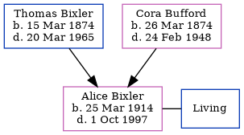

Edward Gabrial Bixler 1910 - 1991
[ Home ] | [ Calendar ] | [ Surnames Index ] | [ Census Index ] | [ Family History ]A farm hands and the 8th of 12 children of Thomas Bixler (a farmer) and Cora Bufford, Edward Bixler, the fourth cousin twice-removed on the mother's side of Nigel Horne, was born in Owen, Indiana, USA on May 13, 19101,2 and had 3 children with Gladys Waggoner: William Edward, Betty A and Isaac Eugene, along with 2 surviving children.
During his life, he was living in Clay, Indiana on Jan 1, 19204; in Spencer, Indiana on Apr 1, 19405 (the same place as his father had been living on Sep 12, 1918); and in Indiana, USA in 19443. On Apr 14, 1944 he was serving in the military (branch: No Branch Assignment; Rank: Private; Service number: 35832365).
He died on Jul 7, 1991 in Owen1 and was buried on Riverside Cemetery, 339 W Jefferson Street, Spencer, Indiana after Jul 7, 1991.
Parents
- Thomas Isaac was born on Mar 15, 1874
- Cora Pearl was born on Mar 26, 1874
Children
- William Edward was born on Apr 30, 1931
Citations
- Social Security Death Index - Findmypast
- World War 2 Allies Collection - Findmypast
- World War Ii Army Enlistment Records - Findmypast
- US Census 1920 - Findmypast (was age 9 and the son of the head of the household)
- US Census 1940 - Findmypast (was age 29 and the head of the household)
Media
US Census 1920 - USC/1920/004965836/00459/040
US Census 1940 - USC/1940/1455791016
Social Security Death Index - USBMD/SSDI/310039819
United States Billion Graves index - US/BMD/BILLION/011338517
World War 2 Allies Collection - WW2/14713662
World War II Army Enlistment Records - USM/WWARMYENLIST/6491938
Family Tree
Generated by ged2site. Last updated on Jun 11, 2024